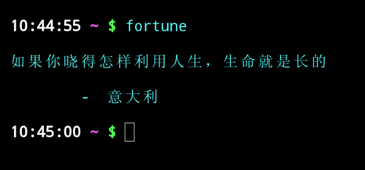

美国中餐馆的最后一道菜，往往是小甜饼，叫做“幸运饼”（fortune cookie）。
里面有一张纸条，写着人生格言。
这种形式的格言，显然很受欢迎。早在1979年，就有人写了一个叫做 fortune 的小程序。在命令行下输入fortune，就会跳出一句。

通常，Linux发行版自带这个程序。如果没有，需要先安装这个程序。
# Debian/Ubuntu $ sudo apt-get install fortune # Mac $ brew install fortune
我很喜欢这个程序，但是它默认的格言库都是英语的，我觉得这点不好，就自己动手做了一个中文格言库。上图就来自这个库，安装命令如下。
$ git clone git@github.com:ruanyf/fortunes.git $ sudo mv fortunes/data/* /usr/share/games/fortunes/
如果是Mac系统，需要重新生成索引文件，即在上面两个命令之间，增加几个命令。
$ strfile fortunes/data/fortunes $ strfile fortunes/data/chinese $ strfile fortunes/data/tang300 $ strfile fortunes/data/song100
目前，这个库带有四个格言包。
- fortunes：英语格言，5472条
- chinese：中文格言，25919条
- tang300：唐诗三百首，313条
- song100:：宋词一百首，95条

fortune 命令显示的格言是随机的，但是分布比例与格言包的容量一致。如果希望四个包平均显示，即每个包都有25%的显示机会，需要使用下面的命令格式。
$ fortune -e fortunes chinese tang300 song100 # 或者 $ fortune 25% fortunes 25% chinese 25% tang300 25% song100
上面代码的第二种形式，让你可以根据自己的偏好，调节每个包的比重。
在 ~/.bashrc 或 ~/.zshrc 文件（根据你使用的 shell 而定）的结尾，加上下面几行，那么每次启动 shell 窗口，就会自动跳出一句格言。
echo echo "=============== Quote Of The Day ===============" echo fortune echo echo "================================================" echo

格言包就是一个文本文件，可以放入任何内容。假如你想用它背单词，也没有问题。下面就是如何制作这一类的 fortune 数据文件。
（1）所有条目都写入一个文本文件，文件名任意。
（2）条目之间用单独一行的百分号（%）分隔，就像下面这样。
路漫漫其修远兮，吾将上下而求索。
—-屈原《离骚》
%
富贵不能淫，贫贱不能移，威武不能屈。
—-《孟子》
%
长风破浪会有时，直挂云帆济沧海。
—-《行路难·其一》
%
志不强者智不达，言不信者行不果。
—-墨子
%
锲而舍之，朽木不折；锲而不舍，金石可镂。
—-《荀子·劝学》
%
（3）生成索引文件。
$ strfile <fortuneFile> <fortuneFile.dat>
上面命令中，尖括号的 fortune 文件名，替换成你的文件名。
（4）fortune 数据文件和它的索引文件，都拷贝到目录 /usr/share/games/fortunes/ 。


你的反应是：